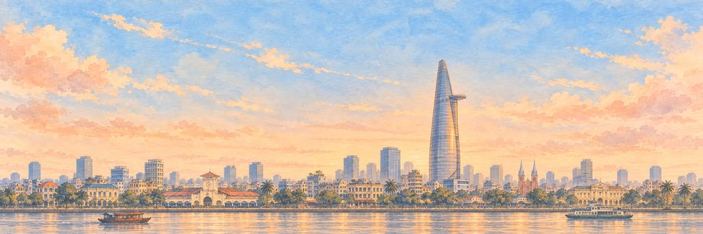

胡志明市 纸飞机游戏
在日落时分沿着西贡河飞，飞过一条条摩托车汇成的河。
先是老店屋，然后是河滨。闯过快递员，再闯过三轮车手。
河边的港口
三百多年前，胡志明市在西贡河边发展成一个贸易港口，船只把大米、水果和鱼运到这里的市场。它在 1976 年改用现在的名字，但很多人还是叫它西贡。今天它是越南最大的城市，大约有九百万人住在这里。
“我要从天上数一数河上的船。”
地标滨城市场
滨城市场（Bến Thành）在 1914 年开业，南门上方的钟楼成了这座城市的标志。市场的屋顶下有一千多个摊位，卖布料、水果、咖啡和热腾腾的米粉汤。到了晚上，市场周围的街道摆满了小吃摊。
街区
老城中心长期被称为第一郡，这里有许多法国统治时期留下的建筑。红砖砌成的西贡圣母大教堂建于 1877 年至 1880 年。旁边的西贡中心邮局建于 1886 年至 1891 年，至今仍作为邮局使用。附近宽阔的阮惠大道在 2015 年 4 月 29 日成为步行街。西边的堤岸（Chợ Lớn）是越南最大的华人区。2025 年 7 月 1 日，这座城市与两个邻近省份合并，并以坊取代了郡。
河流
西贡河长约 251 公里，其中约 80 公里流经市区。守添（Thủ Thiêm）与老城中心隔水相望。2022 年 4 月 28 日通车的守添二桥连接两岸。2017 年 11 月，水上巴士开通，从白藤码头（Bạch Đằng）出发，向上游行驶约 10.8 公里。
天际线
地标 81（Landmark 81）高 461.2 米，是越南最高的建筑。它在 2018 年 7 月 26 日开放，外形的灵感来自一束竹子。位于 79 至 81 层的 SkyView 观景台是全国最高的观景台。更早建成的 Bitexco 金融塔高 262 米，外形像一个莲花花苞。
何时去看
12 月至 4 月的旱季来最好。5 月至 11 月阵雨很大，但通常一两个小时就过去了。黄昏时登上高楼，看河边的灯一盏盏亮起来。
谁在守护胡志明市的心愿。
精英守护者先醒来，首领守护者守着心愿本身。打中它们的弱点，会「砰！」一声；补上最后一击，就是「KO！」。然后它们都会笑着鞠躬。
-
精英


快递员
一个座位载着整个市场 · 摩托车之河的守护者
胡志明市以摩托车多而出名。人们用摩托车运各种东西：一箱箱水果、花盆、冰箱，甚至一整家人。上下班高峰时，摩托车像河水一样在街上流淌，彼此绕来绕去，却几乎从不停下。
快递员把帽子往后一推，拧了拧油门。车顶上的鸭子也醒了。她那一摞箱子往一边歪，她就往另一边靠，把它撑住。快递员点点头，车顶上的鸭子替她鞠了个躬。
“我要坐在后座，帮忙抱着那只鸭子。”
-
首领

三轮车手
蹬得比车流还快 · 西贡河滨的守护者
xích lô 是一种脚踏三轮出租车：乘客坐在前面，车夫在后面蹬。三轮车在 20 世纪 30 年代来到西贡，几十年来载着人和买好的东西跑遍全城。如今只剩下不多几辆，慢悠悠地载着客人吹着风，经过老市场和河边。
三轮车手站在脚蹬上，咧嘴一笑，摇响了他的黄铜铃。三轮车晃了一下，他吓得把铃摇响了。车手摘帽致意，拍拍前座，请飞机坐上来。
“我要坐在前面，让风吹在脸上。”